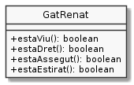

Preguntes a un objecte
Al tema anterior hem conegut el concepte d'accessor i les seves variants típiques getters i setters.
Aquests mòduls permeten accedir per consultar i modificar el valor de propietats d'una manera controlada. És a dir, evitant que les propietats no puguin arribar a tenir un valor no adequat.
Tot i sent una bona protecció, de vegades els accessors ens obliguen a crear un codi no gaire llegible.
Per exemple, si volem saber si el gat Renat està estirat, ens toca fer la
següent condició: renat.getPosicio().equals("estirat").
if (renat.getPosicio().equals("estirat")) {
System.out.println("El gat Renat està estirat");
}
Imagina't si poguéssim expressar-ho de la següent manera:
if (renat.estaEstirat()) {
System.out.println("El gat Renat està estirat");
}
No em negaràs que això no queda més fàcil de llegir, oi?
Podriem dotar al gat Renat d'un conjunt de mòduls que ens oferissin aquest accés més natural. Per exemple:

El mòdul estaViu() ens respondrà true si encara li queda alguna
vida. Per tant, la següent expressió seria certa:
renat.estaViu() == renat.getVides() > 0
Quin codi preferiries trobar-te si haguessis de modificar-lo?
if (renat.estaViu()) { if (renat.getVides() > 0) {
// XXX codi complex amb // XXX codi complex amb
// un gat viu // un gat viu
} }
Una mica de culturilla POO
Si bé un mòdul com ara estaEstirat() també ens permet accedir al valor
d'una propietat privada de la instància, en el món POO, no se'l coneix com
a accessor.
En tot cas, ja va sent hora de que et presenti el nom amb el que normalment ens referim als mòduls definits a una classe: en diem mètodes o també serveis.
Pots imaginar-los com els mètodes amb els que ens podem comunicar amb la instància o, també, els serveis que ens ofereix la instància, com ara saber si el gat està estirat.
Per cert, els accessors són també un tipus de mètode.
Això de definir mètodes amb noms que faciliten la lectura és quelcom molt valorat en POO.
Un altre terme habitual en la programació orientada a objecte és el de membre. Els membres d'una classe inclouen tant les propietats com els mètodes.